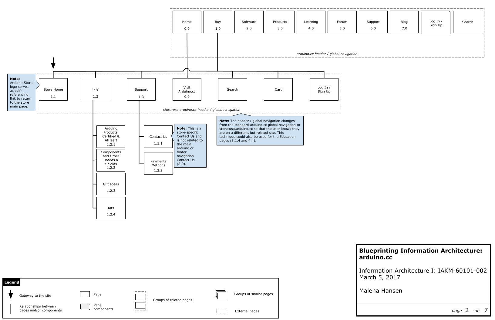
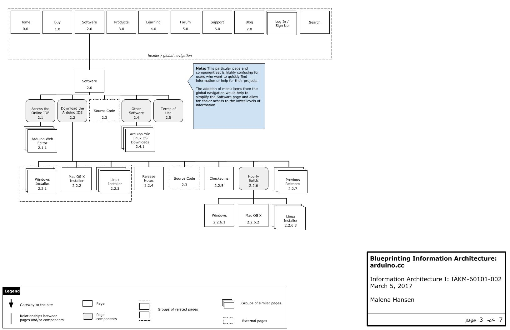
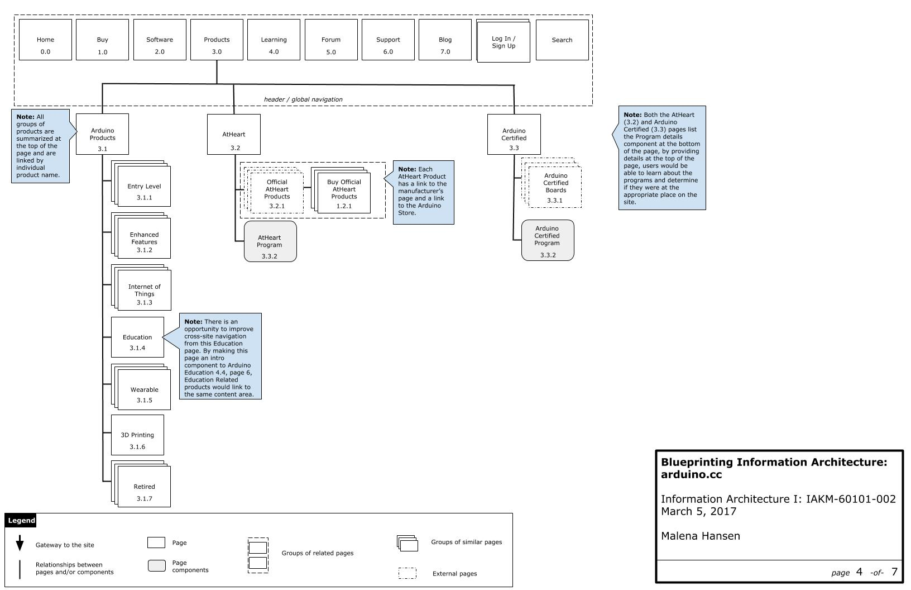
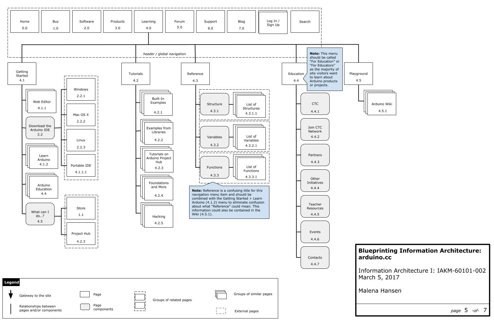
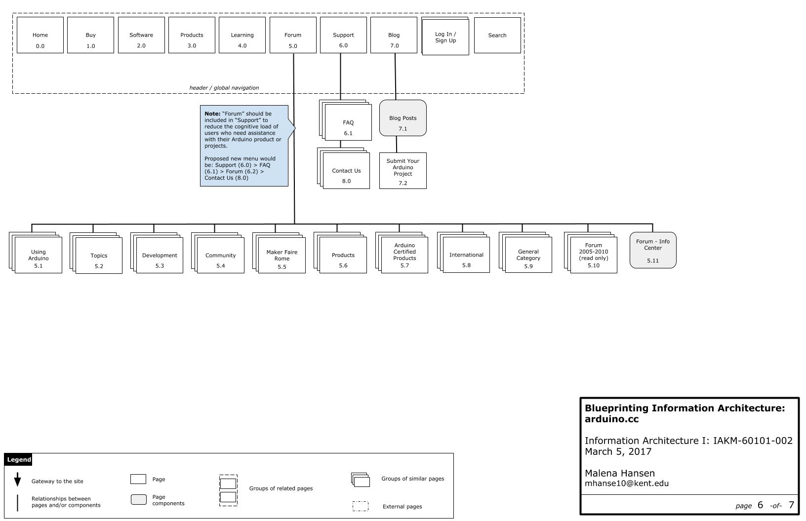
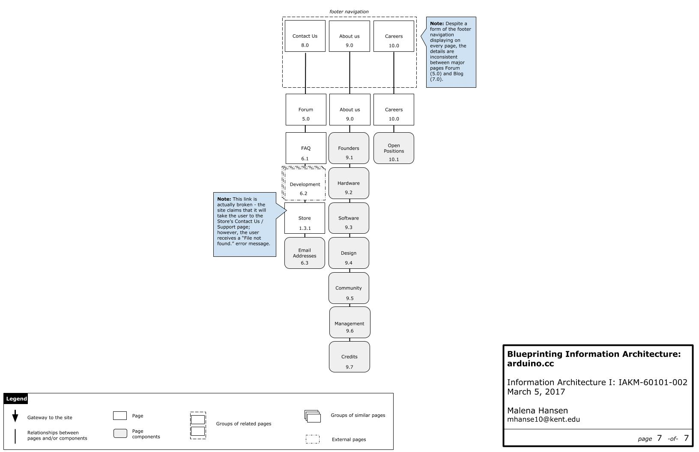

Blueprinting Information Architecture
results:
The following images show the information architecture of arduino.cc as of March 2017. The information architecture is charted after my suggestions for improvement.
What Should be Improved
The collection of arduino.cc sites contains a vast amount of information; however, with its mix-and-match approach toward information architecture and knowledge management, it can be challenging for a user to find information at first attempt.
Figure 1
The home page displays content using a database (bottom-up) approach primarily from the blog and store arduino.cc sites.
Figure 2
This screenshot shows where a top-down organizational scheme and extra topical navigation options would help the user looking for a specific operating system’s downloads to filter the page for a reduction in time spent scanning the page and user cognitive load.
Other Information Architecture Diagrams from arduino.cc





← Go back to review my actions.
We've been through the projects, let's talk about what I learned →.